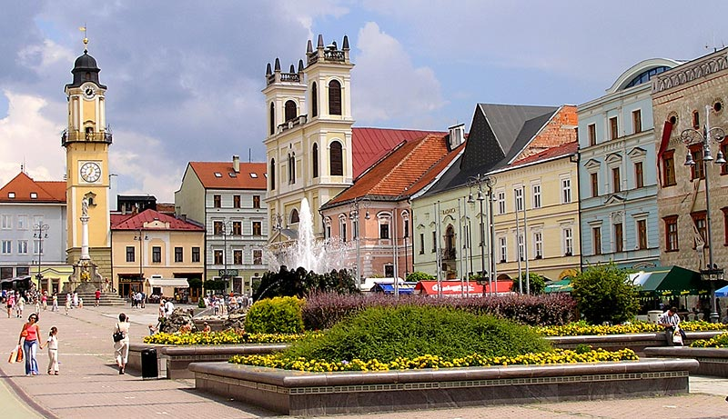
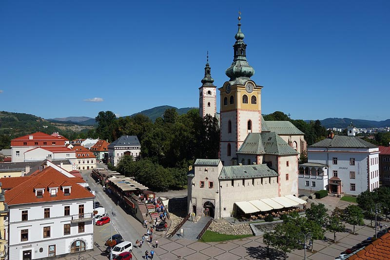
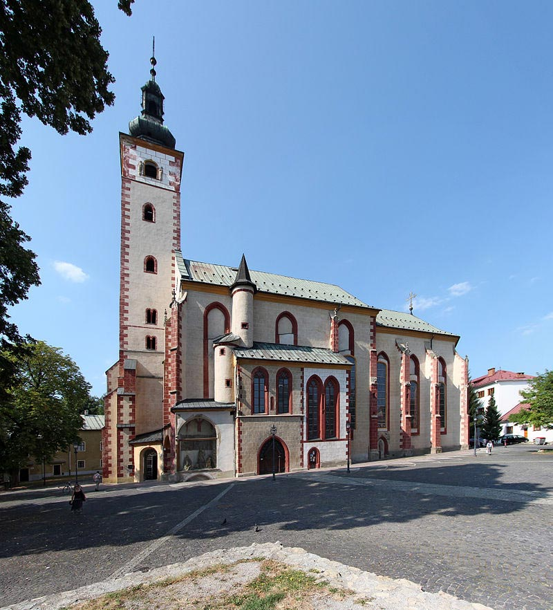
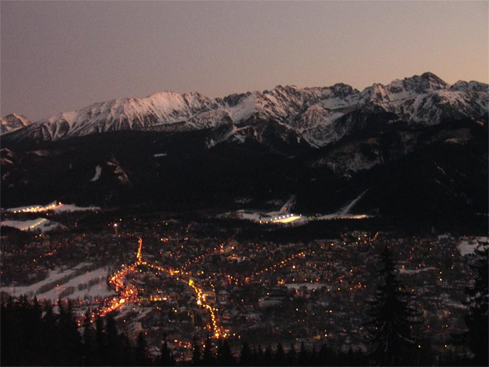
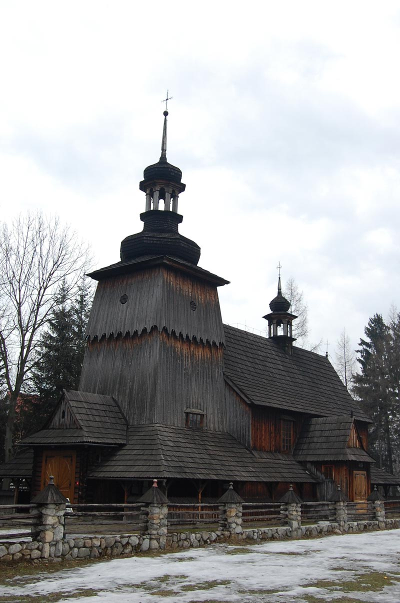
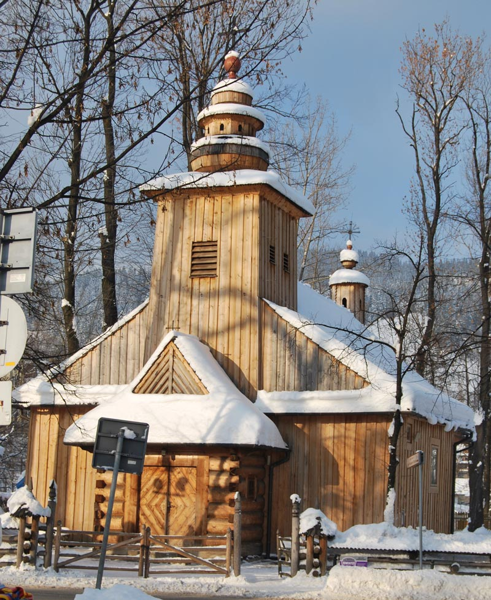
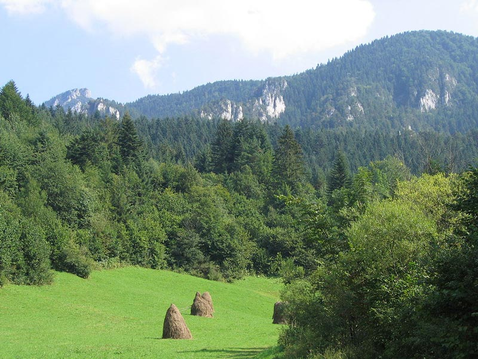
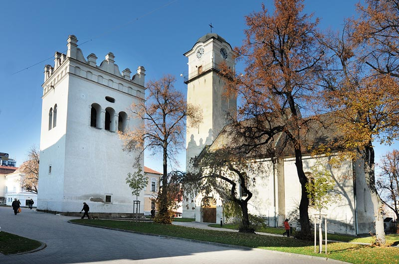
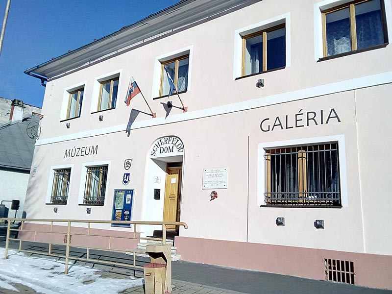
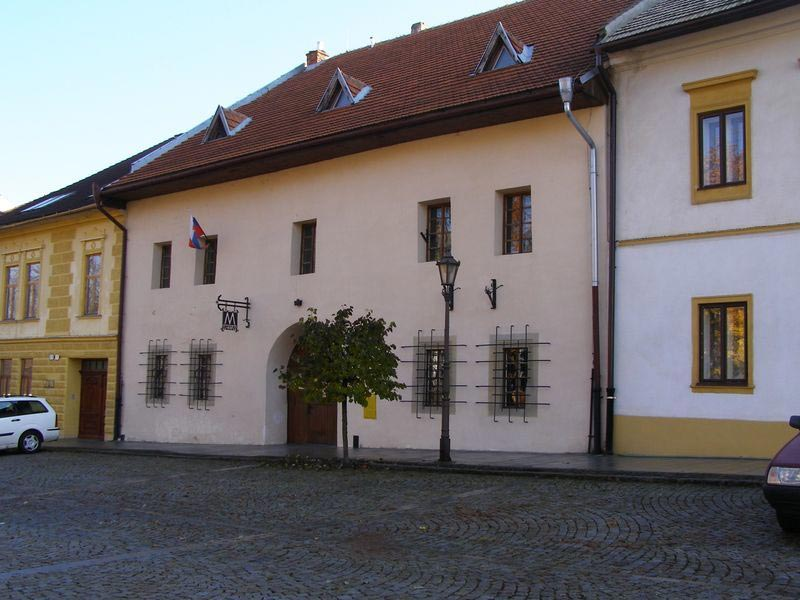

【美景】
班斯卡•比斯特里察是冬季和夏季的热门旅游胜地；
札科帕内被非正式地称为“波兰的冬季首都”；
波普拉德以风景如画的历史中心和度假胜地而闻名。
具体行程：
DAY1：布达佩斯-班斯卡·比斯特里察
入住地点：班斯卡·比斯特里察
景点：斯洛伐克民族起义广场 斯洛伐克民族起义广场是在班斯卡-比斯特里察的中央区域。600多年来，它一直是这座城市的生活中心和享有盛誉的住所。 20世纪期间，广场上定期举行群众集会，为了纪念第一次民族独立，将其命名民族起义广场。它被咖啡馆，饭店和小商店所点缀，是当地人流连忘返的好去处，并以其历史建筑和视觉吸引力而闻名。13世纪被授予《皇家宪章》之后，广场上居住的“方堡人”在皇家自由镇的公民中享有特殊特权（在县管辖范围以外的直辖市-直属君主，并在国会中有自己的代表）。整个19世纪，林伯格仍是班斯卡•比斯特里察的一个尊敬的“尊敬的公民”。  景点：城市城堡 镇城堡在班斯卡-比斯特里察是特性里程碑，历史核心的符号，班斯卡-比斯特里察有一对洋葱形塔的一个典型的轮廓，位于该正方形的顶部，是国家文化古迹。 城镇城堡是建在原始采矿定居点旁。那时已有一个圣母玛利亚升天的教区教堂，后成为中世纪末新堡垒的中心。城镇城堡的作用是保护收益，防止开采贵重金属及皇家国库。国王和教堂代表住在这里，共同的防御工事可丰富具有各种功能的各个建筑物，这可以保护贵族免受外部敌人和内部动荡的影响，尤其是在采矿起义期间。 最古老的建筑是13世纪下半叶晚期罗马式圣母玛利亚教区教堂。它最初是由一座公墓包围，直到19世纪，藏有罗马人的古代遗骨的墓地一直屹立在此。 15世纪后半叶加强了教区教堂周围的区域，并建造了其它属于政府的采矿城镇。城镇城堡的区域由圣母玛利亚教堂，国王马蒂亚斯国王哥特式房屋（建于1479年），斯洛伐克教堂（圣克里雅教堂1492年），市政厅（1500年），教区建筑和带有堡垒的石制防御工事组成。防御工事由高高的石墙和圆形堡垒组成。设防最重要的部分是外堡，完成于1512年，通过两个大门进入，供马车和行人使用。当时，该教区教堂进行了昂贵的建筑改建，仍然保留着保存完好的带有哥特式十字架拱顶的讲堂，即圣安德鲁教堂的侧面教堂。勒沃扎大师帕维尔（ Barvoa）的芭芭拉（Barbara）和晚期哥特式有翼祭坛，约德大师（Jodok）大师晚期的哥特式青铜洗礼池。祭坛是由列沃察大师保罗制成的，却毁于1761年的一场大火；1767年巴洛克式祭坛代替了它。洋葱形铜屋顶的典型轮廓在这一时期形成。不久市政厅并入了城堡。16世纪下半叶，经历了几处建筑改建，使其具有当今的特色。1546年，它被扩大和重建。1564年，重修改了其外墙，旧的哥特式凉廊，并用带燕尾尾巴的文艺复兴时期的阁楼完成了建筑。  景点：圣母玛利亚升天教堂 圣母玛利亚升天教堂是教区教堂，一栋中殿晚期的哥特式建筑，带有多边形完成的长老会和一座塔楼，该塔楼始建于13世纪，当时是罗马式建筑。塔的下部保留了这段时期的狭窄罗马式窗户。14-15世纪，教堂进行了哥特式重建。1470年以后成为南部的圣约翰教堂。尽管发生了几场毁灭性的大火，但仍保留了哥特式细节。有价值的元素包括哥特式青铜洗礼台，基督在橄榄山的雕像。教堂在1761年左右被装饰成巴洛克式风格，当时教堂被毁灭性大火吞没。1774年安东施密特创造了巴洛克风格的圣母升天和三位一体的绘画主坛。 
DAY2：班斯卡·比斯特里察-札科帕内
入住地点：波普拉德
札科帕内 扎科帕内是波兰极南端的一个小镇，位于波多贺地区南部的塔特拉山脚下。1975年到1998年间隶属新松奇省，1999年以来改隶小波兰省管辖。截至2016年，它的人口约为27,424，是高原民族的文化中心，被非正式地称为“波兰的冬季首都”。该地以登山运动、滑雪和深度旅游之胜地而闻名。 扎科帕内位于斯洛伐克的边界附近，且于塔特拉山脉和古巴洛瓦卡山之间的山谷中，海拔约800-1,000米。该镇以克鲁波奇街和哥斯街的交汇点为中心。 扎科帕内的历史可以追溯到17世纪，当时是一个沼泽地。1676年，是一个拥有43名居民的村庄。1818年，扎科帕内是一个仍在开发中的小镇，约有1,805人，第一座教堂建于1847年，是该地区采矿业和冶金行业的中心。19世纪，它是加利西亚最大的冶金中心。到1889年，它已经从一个小村庄发展成为一个疗养胜地。19世纪晚期，扎科帕内修建了一条通往新塔尔格的道路和铁路。由于交通更加便利，到20世纪末，扎科帕内的人口增加到约3,000人。滑雪跳台于1925年开放。前往卡斯普罗维峰的缆车于1936年完工，1938年缆车连接扎科帕内和古巴洛瓦卡山的山顶。这个小镇因为滑雪越来越受欢迎， 1930年的游客人数增加到约6万人。 1939年，波兰战役及二战爆发，札科帕内被斯洛伐克军队占领，但实际为德国所控制。1940年，苏联内务人民委员会和纳粹德国盖世太保的代表在扎科帕内协调平息波兰抵抗势力。在整个第二次世界大战期间，扎科帕内是波兰占领区和匈牙利王国之间的地下中转点。从1942年到1943年，德国集中营的1000名囚犯被送来此处的采石场工作。  景点：圣约翰使徒和传教士 木教堂使徒约翰和传播者于1700年左右在小波兰省的卡尔瓦利亚多夫斯卡建的巴洛克的风格的木制教堂。 1947年，它被转移到扎科帕内，并在哈伦达地区重建。随后进行了翻新。 教堂旁的公园是哈伦达庄园和扬•卡斯普罗维奇的陵墓。这座受保护的建筑是小波兰木制建筑之路的一部分，也是扎科帕内最古老的神圣建筑之一。  景点：圣母大教堂 圣母大教堂的木制教堂于1847年由塞巴斯蒂安•格森西尼卡•索布恰克在牧师约瑟夫•斯托拉尔奇齐克的倡导下以小波兰木制教堂的风格建造。 该建筑最初被奉为圣克莱门特教堂。1930年代，琴斯托霍瓦黑人圣母教堂被奉献。 教堂旁边是古老的墓地建于1810年的圣佐拉德和本尼迪克特的砖木教堂，是扎科帕内最古老的神圣建筑之一，后来移到其它地方的巴洛克式教堂。教堂也被称为旧教堂，属于神圣家族的教区。 教堂里还为来自东欧国家游客的东正教弥撒庆祝，特别是1月7日的圣诞节弥撒。  景点：国际登山路 友谊爱森纳赫的国际登山路-布达佩斯（简称EB-WEG）是一个长距离的远足径，通过德国，捷克，波兰，斯洛伐克和匈牙利，长2690公里。 登山步道的起点是艾森纳赫的瓦尔特堡。从霍森到伦威格的纽豪斯的路段位于伦斯泰格。此外，转移的方式图林根板岩山，沃格兰，矿石山，波西米亚撒克逊瑞士，劳济茨山，耶斯特岭，伊泽拉，卡佐夫斯基山，斯涅兹尼克山，耶塞尼基，贝斯基迪，马拉法特拉，马特拉和比克，前往布达佩斯。 1980年5月，第十四届国际友谊国际旅游会议在艾森纳赫和威廉港举行，捷克斯洛伐克和波兰人民共和国的大型代表团参加了会议。 1983年5月28日，在艾森纳赫的山区远足小径在瓦尔特堡举行了仪式。在库尔特外滩政府官员和瓦尔特堡宫院长发表演讲。捷克众多外国徒步旅行者，斯洛伐克，波兰和匈牙利马扎尔参加了这个首映式。 1987年夏天，爱尔福特徒步旅行者沃尔夫冈•布科瑙花了74天掌握了整条路线。大多数EB步道都被整合到了欧洲长途远足步道中。尽管它在图林根州和萨克森州保留了自己的路线。它在德国仍然非常有名，而向东的EB徽标在很大程度上已被E3徽标取代。 
DAY3：波普拉德-布达佩斯
返回布达佩斯
景点：圣埃吉迪乌斯教堂 圣埃吉迪乌斯教堂是一座罕见的文化历史古迹，位于圣马可广场上。教堂的历史可以追溯到13世纪下半叶。教堂的内部装饰着一组特殊的中世纪画。教堂的文艺复兴时期的钟楼始建于1592年。教堂附近有一个砂岩柱，上面有1728年的圣母无染原罪像的巴洛克雕像。埃吉迪乌斯是猎人，森林的守护神。 波普拉德教堂的塔楼近40米高，从塔楼可以欣赏到全景。埃吉迪乌斯装饰波普拉德的广场。  景点：舍费尔的房子 博士奥埃尔•西利亚姆•舍费尔维也纳大学药房毕业，药剂师，植物学家，科学家，人文主义者。凭借他丰富而活跃的生活，他不仅在大国，而且在广阔的塔特拉地区，都拥有不可磨灭的生活。他在居住的韦卡尔，匈牙利积极参与传播教育，研究以及文化和社会生活的发展。他是斯皮斯药剂师协会，教师协会，奥地利药剂师协会，匈牙利喀尔巴阡协会的成员。他是大塔特拉博物馆学会的创始人之一，并一直担任馆长直至去世。他在公共社会生活中的每一步工作都体现了他的人文思想和生活意识。他向奥雷尔•理查德•朱拉•谢弗尔幼儿园基金会捐赠了带有花园的房子，给需要照料的孩子们。 在高塔特拉山区的植物学研究，他编辑了有价值的植物标本室，被博物馆的收藏，同时获得了多个国际文凭和奖项。  景点：斯皮什卡索博塔博览会 波普拉德的波达特莱斯博物馆的分支斯皮什卡索博塔位于一栋最初的汉堡屋内，坐落在该镇纪念碑保护区，在历史悠久的广场上的梯田建筑中。 博物馆展出手工艺品，城镇住房，贵族和谦卑，斯皮什卡•索博塔的个性。 
Poland: The Country of Picturesque Cities
With a rich position in history, a number of old medieval buildings, wonderful museums and the ill-famed Auschwitz camp, history lovers can’t go wrong with a Poland holiday. Since the days of WII and the Warsaw uprising, Poland has so much to discover and explore. Food also plays a huge role within Polish culture, so it’s a fantastic experience if you get to try some during your visit. Many classic dishes are pierogi, bigos and borscht and these can easily be found in small eateries or restaurants throughout the country. If dessert is on the cards after trying some of the famous Polish mains, try paczki, a delicious Polish style doughnut.
Slovakia: The Heart of Europe
Right in the heart of Europe, Slovakia is a land of castles and mountains, occasionally punctuated by industrial sprawl. More than a quarter-century after Czechoslovakia's break-up, Slovakia has emerged as a self-assured, independent nation. Slovakia shines brightest for lovers of history, nature and the outdoors.
时间
地点
景点（可以 +/- ）
入住地点
第一天
布达佩斯出发184公里
班斯卡·比斯特里察
Banská Bystrica
斯洛伐克
Benického dom, MUSEUM SNP, Barokový Mariánsky stĺp, bathhouse, Thurzov dom, Banska Bystrica Castle, 圣方济各沙勿略主教座堂, Radnica, Soviet Army Dead Heroes Memorial, Fontána na Námestí SNP, Hodinová veža, mestský park Banská Bystrica
第二天
142公里
70公里
札科帕内 Zakopane
波兰
The Tatra Museum in Zakopane, Muzeum Oscypka Zakopane, The Great Krokiew, Villa Atma, Dom do góry nogami, Sanktuarium Najświętszej Rodziny, Dolina ku Dziurze, Centrum Edukacji Przyrodniczej Tatrzańskiego Parku Narodowego, Aqua Park Zakopane, Napis Zakopane
波普拉德 (Poprad)
第三天
253公里到布达佩斯
Tatra gallery (兵马俑）, Tatra Museum in Poprad, Scherfelov dom, Klub Veličanov, Termy Poprad, Kostol svätého Egídia, Church of St. George, 斯洛伐克天堂国家公园
-